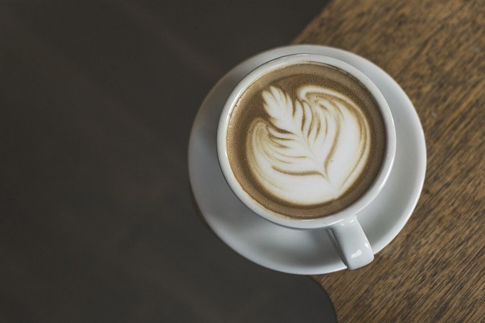
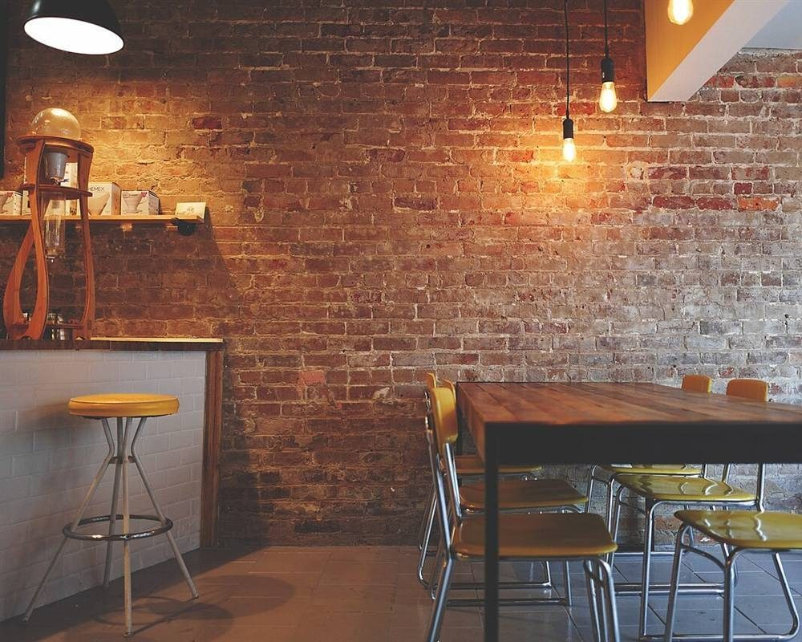
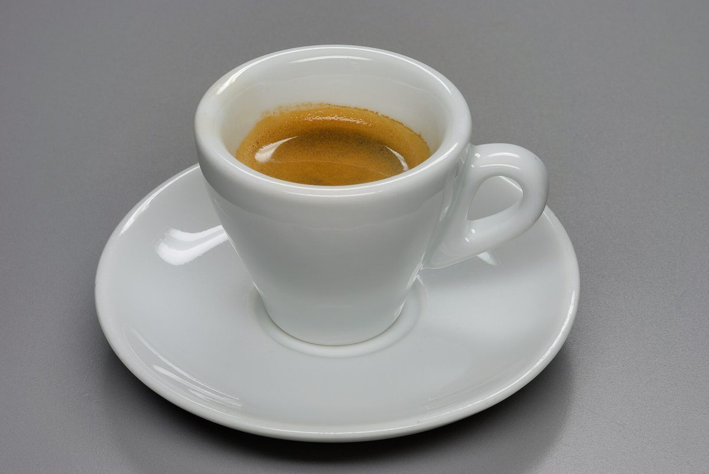

制作側の連想
ラジカセの部位を、配置図にしてみる
このサイトは、ラジオとカセットテープを一台にまとめたラジオカセットを正面から見た図にしたつもりで作りました。六つの部位に番号をふり、上の図と並べています。制作側の連想で、お店の理念・由来とは無関係です。実際の機種の仕様を示すものでもありません。
凡例
六つの部位
- 1アンテナ伸び縮みして、ラジオの電波をつかまえるための細い棒。
- 2チューナーダイヤル針を動かして、聴きたい周波数に合わせるための目盛りの窓。
- 3スピーカー音を外へ出す、丸い網目の部分。左右にひとつずつ並ぶ。
- 4カセット室テープをセットする、ふた付きのくぼみ。
- 5操作ボタン再生・停止・早送りなどを押して切り替える、横並びのキー。
- 6持ち手本体の上に渡した、持ち運ぶための握り。
写真帯(イメージ)
カップとコーヒー道具の写真




写真はカフェのイメージです。お店のものではなく、お店の設備や提供内容を示すものでもありません。
ギャラリー(イメージ)
豆・パン・クッキーの写真


写真はイメージです。お店で提供している商品を示すものではありません。
ご案内
お店のこと(確認できたものだけ)
| 所在地 | 〒632-0058 奈良県天理市成願寺町430-2 |
|---|---|
| 電話 | 準備中 |
| 営業時間 | 準備中 |
| 定休日 | 準備中 |
| ご予約 | 準備中 |
| 駐車場 | 準備中 |
| SNS | Instagram @littleplus_cafe |